The Lord Raised Up a Deliverer
Opening: after Joshua
~3 min- Callback to last week: Joshua led Israel, Jericho's walls fell, and Joshua said "as for me and my house, we will serve the Lord." The people promised right back: "we will serve the Lord" (Joshua 24:21).
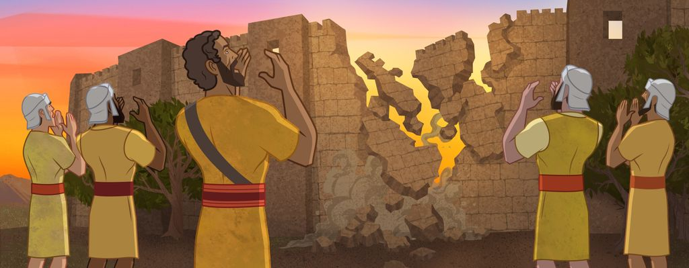
- Read Judges 2:8, 10: Joshua dies, and "there arose another generation after them, which knew not the Lord." They forgot.
- Ask: how do you keep a promise to God even when the people who taught you aren't around anymore? (That is the whole question of this book.)
The cycle: did evil, cried, delivered
~5 minThe book of Judges runs the same loop over and over. Draw this wheel on the board from Judges 2:11–19:
↺ and the whole thing starts over again
- Ask: which step is repentance? (Crying unto the Lord and turning back.) Which step is God's mercy? (He raises up a deliverer every single time they turn back, even though they keep forgetting.)
- Land it: the deliverers (the judges) are God's mercy in action. Hold onto that word deliverer. We will meet three of them, and then the greatest One.
Deborah: faith that makes others brave
~5 min- Israel cried out again. Their enemy had 900 iron chariots. The judge this time is Deborah, a prophetess and the only woman judge in the book.
- She tells the captain Barak to take 10,000 men. Barak is scared: "If thou wilt go with me, then I will go" (Judges 4:8). Deborah goes with him.
The Lord goes first. Israel just follows. A storm turns the valley to mud, the iron chariots get stuck, and Israel wins.
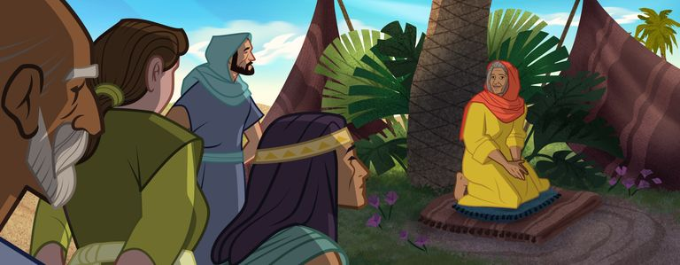
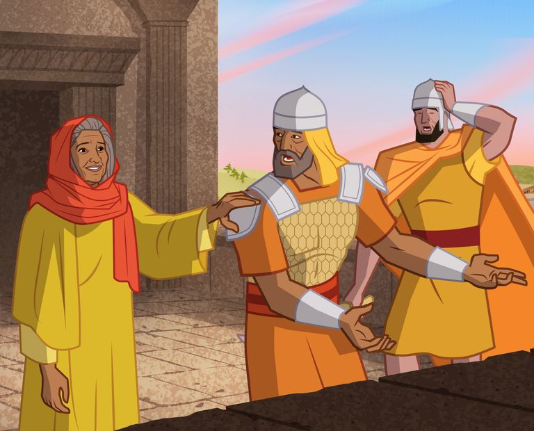
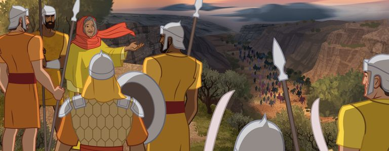
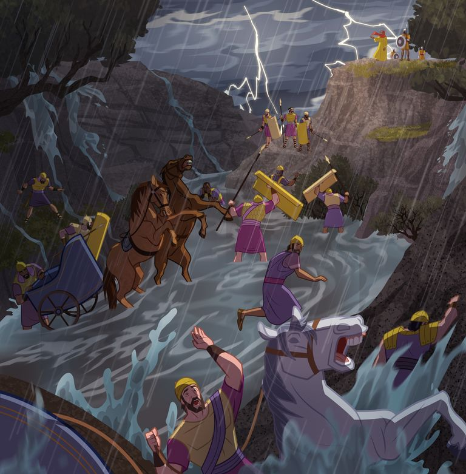
Deborah the Prophetess, official "Old Testament Stories for Kids" (Gospel for Kids). About 3 min.
- Ask: Barak was braver because Deborah believed. Who makes you braver about following Jesus? Whose faith could you strengthen?
Gideon: the Lord uses small things
~9 min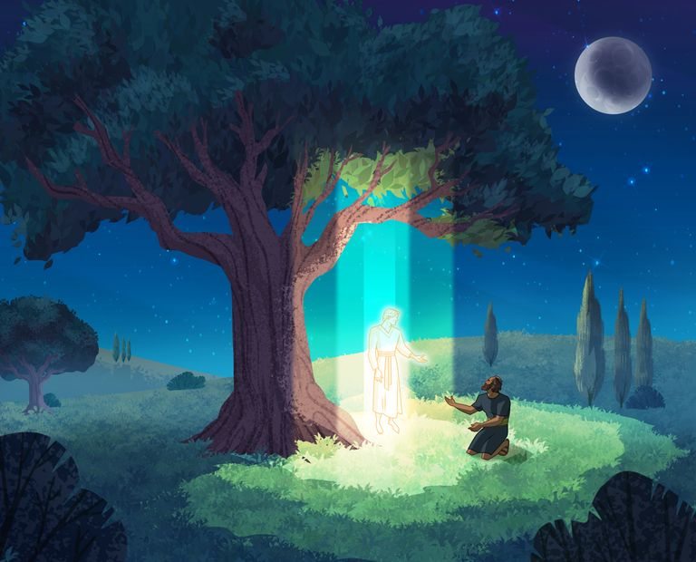
- The Midianites are so bad the Israelites hide in caves. An angel finds Gideon hiding and calls him "thou mighty man of valour" (Judges 6:12). Gideon feels like the opposite: "my family is poor... and I am the least in my father's house" (6:15).
- Ask: did the Lord call the strongest, richest, most confident guy? (No. He called the one who felt like the least.)
The fleece (Judges 6:36–40)
Gideon asks for a sign twice: wet fleece on dry ground, then dry fleece on wet ground. The Lord is patient with him both times.
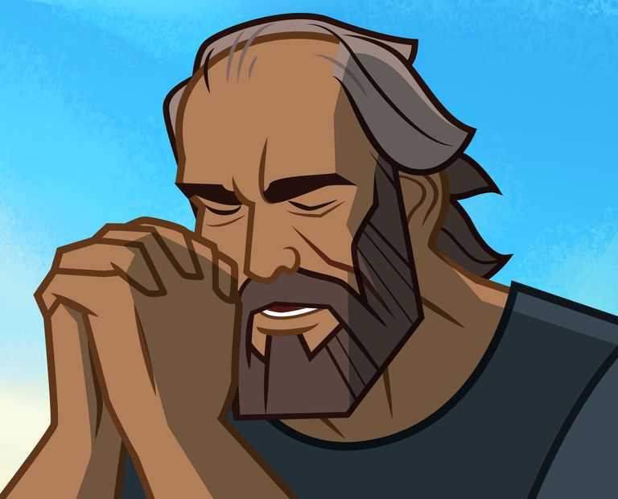
The shrinking army (Judges 7)
Gideon gathers 32,000 men. The Lord says it is too many, "lest Israel vaunt themselves against me, saying, Mine own hand hath saved me" (7:2). Anyone afraid goes home (22,000 leave). Then the water test keeps only the 300 who lapped like a dog.
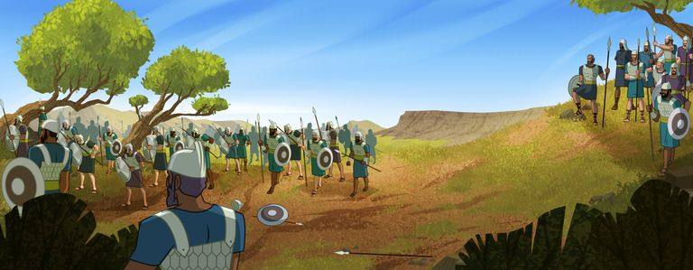
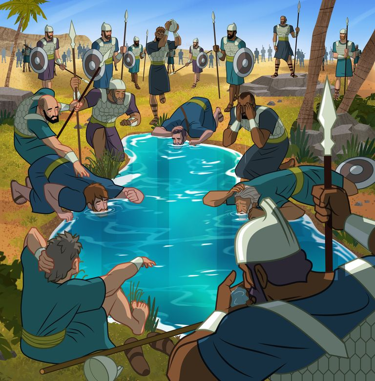
The battle (Judges 7:16–21)
No swords drawn. Each man gets a trumpet and a clay pitcher with a torch hidden inside. At the signal they smash the pitchers, the light blazes out, they blow the trumpets and shout "The sword of the Lord, and of Gideon!" The enemy panics in the dark.
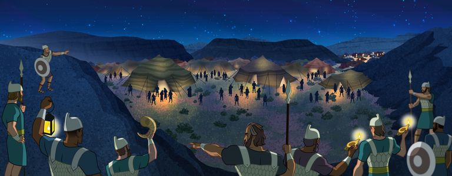
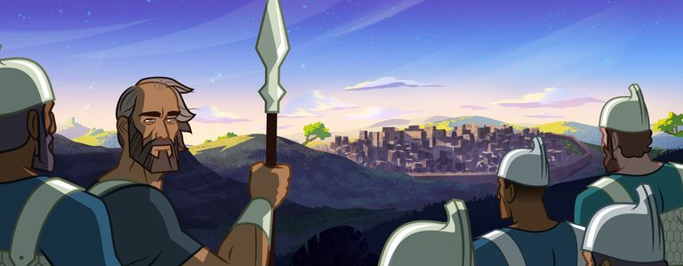
The Army of Gideon, official "Old Testament Stories for Kids" (Gospel for Kids). About 4 min.
- Land it: "The Lord can use small things to do great work." You do not have to be the biggest or strongest. You have to be willing.
Samson: strength comes from keeping covenants
~5 min- The last judge we will meet is Samson, the strongest of them all and the saddest story.
- From birth Samson was a Nazarite: set apart for God, with a covenant that he would never cut his hair as the sign of his promise (Judges 13:5). His strength came from the covenant, not from the hair itself.
- Ask: where did Samson's strength really come from? (His covenant with God.)
- But Samson made bad choice after bad choice. The scriptures keep saying he "went down" to the wrong places with the wrong people. Finally he gives away his secret, his hair is cut, and "he wist not that the Lord was departed from him" (Judges 16:20). He lost his strength because he let go of his covenant.
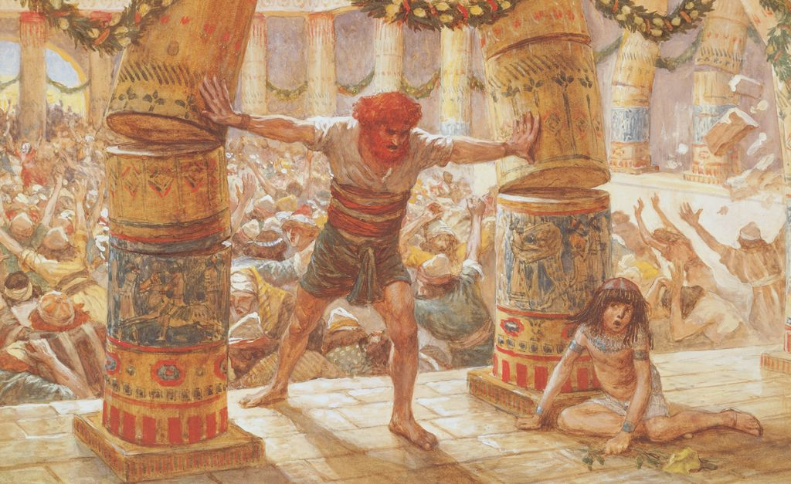
Contrast with last week: Joshua kept his promise his whole life ("as for me and my house") and stayed strong. Samson had more raw strength than anyone, but lost it because he did not keep his promise.
Take-home and testimony
~3 min- Every judge was a deliverer God raised up: Deborah, Gideon, even Samson. But they were all little pictures of the real Deliverer: Jesus Christ. When we get stuck in our own cycle and cry unto the Lord, He delivers us. He is the greatest Deliverer God ever raised up.
- Connect the two weeks: last week we promised "we will serve the Lord." This week shows that we will forget sometimes, and that God always makes a way back. The way back is to cry unto the Lord and turn around.
- Challenge: this week, when you mess up, do not stay stuck. Remember the cycle: cry unto the Lord and turn back. He already raised up a Deliverer for you.
- Brief testimony of Jesus Christ as our Deliverer. Close with prayer.